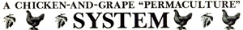
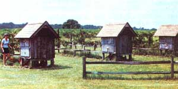

Two years ago, my wife Judie and I moved from the city to 11 acres in rural Levy County, Florida (just 20 miles west of Ocala, our former urban home). The soil in this part of the Sunshine State is very poor - it's mostly sand, and it allows water and nutrients to percolate away - but we've managed to successfully cultivate two very different kinds of crops: chickens and grapes. And perhaps most important, we've done so by teaming them together to create a mutually supportive partnership that produces loads of fresh fruit and plenty of eggs.
WHICH CAME FIRST?
Actually, we planted our grapes - three parallel 120-foot rows, each containing six vines - well before we came up with the idea of adding chickens to the scheme. At the start, in fact, our most immediate concern was finding a way to keep our newly established cultivars irrigated.
Eventually, I came up with a convenient solution: I ran a 3/4" feeder pipe underground from our water-to-air heat pump - which circulates eight gallons a minute - to the vineyard . . . and then laid an individual aboveground PVC pipe from the conduit to, and along, each row. After that, I simply drilled a series of six holes in the piping (placing each one at a point adjacent to a vine) . . . and we were in business.
But the system created some problems, too: The irrigation pipe - as well as the vines themselves and their supporting posts and wire - made mowing the grass and weeding very difficult. I could've buried the PVC . . . but I feared that digging the necessary trenches might damage the grapes' roots. Elevating the pipes, it seemed, would be a better solution.
As I contemplated possible support systems that could be used to keep the tubing off the ground, however, I realized that I would essentially be building a kind of pipe-supporting framework . . . and that by enclosing the structure with wire, I'd have myself a cage. And if I put chickens in that cage . . . why, maybe the birds would keep the grass down, control the insect population, and fertilize the area, too!
CONSTRUCTION
As you can see from the photo, the setup that arose from that notion is actually quite simple. First, we built 11 hurdle-like support frames for every 120-foot row. To make each one, we nailed a used 4'-long 2 X 4 between a pair of old fence posts cut to 3-1/2' lengths. Then - at 10' intervals along the row - we positioned each "hurdle" so that the posts on either side were equidistant (in other words, 2') from the vines themselves. After digging holes, we sank the posts until 20" of wood remained aboveground.
With the framework in place, we proceeded to install the poultry netting. Since we didn't want our chickens to scratch their way out under the fence - or other critters to burrow into the enclosure - we first dug a shallow trench (about 4" deep) along the outside of each row of posts, to enable us to bury the lower portion of the fence.
Next, we unfurled a 4'-wide roll of wire along one side of each row and, working one 10' section at a time, nailed the wire up so that the bottom half of the mesh - which included the part that we placed in the trench and then covered with earth - formed a vertical wall. Then we folded the top half of the mesh over horizontally to stretch across from the posts to the vines.
When we completed one side of a row, we repeated the process on the other side and connected the folded-over halves (cutting around the grapes and their supports where necessary) to form a flat roof. (At first, we used store-bought wire clips for the job, but eventually we decided that simple twists of wire worked nearly as well . . . besides, they cost almost nothing.)
After we'd finished constructing all three row cages, we still had to provide shelter for the chickens, so I designed and built a small coop at the end of each row. The shingle-roofed structures rest above the ground on pilings (to give the poultry some shaded space underneath) and have access doors to each of four nests so that we can gather eggs without having to actually enter the coop or cage.
With the houses built, all we had to do was add chickens. . . and wait to see just how our "odd couple" - plants and birds - would get along.
A SUCCESSFUL RELATIONSHIP
Two growing seasons have passed, and we're happy to report good results from the arrangement. We didn't, of course, expect (or get) a first-year harvest from our new grapevines . . . but at the end of the second year (1983) - despite the fact that we had a hot, dry summer - we were able to pick about ten pounds of grapes from each vine. And we anticipate gathering substantially more fruit this year.
Meanwhile, our chickens are healthy, happy, and productive . . . thanks largely, no doubt, to the fact that they're free to roam and forage over a relatively large area. In addition to providing us with plenty of eggs to eat, sell, or give away, the birds supply our plants with an excellent balance of nitrogen, phosphorus, and potassium . . . they hold insect problems to a minimum . . . and their busy scratching and pecking keep the rows nicely weeded. The Coastal Bermuda grass that's gradually establishing itself in the runs is fast-growing and highly tolerant of traffic . . . and in July, August, and September the chickens can barely keep up with it (but they do). During the remaining nine months of the year, they eat it faster than it grows, and the vegetation's runners simply hold the soil in place.
We weren't sure, at first, just how many chickens we should house in each row (we wanted them to have enough space and to provide our vines with neither too much nor too little fertilizer), but we've since determined that two chickens for every grapevine - 12 hens for each row - is about right for our soil. We've also noticed, however, that our healthiest vines are those closest to the coops, where the chickens spend most of their time. Therefore, if you want to make sure that the entire row is fertilized evenly, you could build a smaller chicken house at each end of every row . . . or put one in the middle . . . or construct shaded feeding stations at intervals in the run to encourage your birds to use the entire area and thus distribute their droppings more evenly.
AN ADDED BENEFIT
We've discovered that permaculture - establishing integrated natural systems that work together to mutual advantage - really does work. But we've done more than merely make sure our grapes and chickens thrive . . . we've made our lives a little easier and more enjoyable, too. We don't have to spend a lot of time weeding, fertilizing, or chicken-tending . . . yet we reap bountiful quantities of grapes and eggs.
Furthermore, the entire system - the straight rows and green-leaved vines, the tidy coops, and the colorful chickens and fruit - has added an extra measure of beauty to our place that makes being here just that much more pleasant.
What more could you ask?
Â
|
 |
 |
|